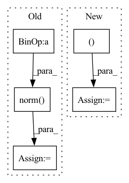

Pattern ID :5213

Before Change
// construct graph edges
senders, receivers = common.triangles_to_edges(inputs["cells"])
relative_mesh_pos = (tf.gather(inputs["mesh_pos"], senders) -
tf.gather(inputs["mesh_pos"], receivers))
edge_features = tf.concat([
relative_mesh_pos,
tf.norm(relative_mesh_pos, axis=-1, keepdims=True)], axis=-1)
mesh_edges = core_model.EdgeSet(
name="mesh_edges",
After Change
velocity = inputs["velocity"]
node_type = F.one_hot(node_type[:, 0].to(torch.int64), common.NodeType.SIZE)
node_features = torch.cat((velocity, node_type), dim=-1)
senders, receivers = common.triangles_to_edges(inputs["cells"])
mesh_pos = inputs["mesh_pos"]
In pattern: SUPERPATTERN
Frequency: 4
Non-data size: 5
Instances
Fragment ID: 18435865
Project Name: wwmark/meshgraphnets
Commit Name: 1ad048efb0f606f799674edb4d16a0554e54bf28
Time: 2021-10-24
Author: ruoheng.ma@gmail.com
File Name: cfd_model.py
M Class Name: Model
N Class Name: Model
M Method Name: _build_graph(3)
N Method Name: _build_graph(3)
M Parent Class: nn.Module
N Parent Class: snt.AbstractModule
M File Name: cfd_model.py
N File Name: cfd_model.py
M Start Line: 44
M End Line: 53
N Start Line: 63
N End Line: 75
'>
Before Change
[[0, 0, 0], [0, 0, 1]], c.matrix
)
v0 = [0, 0, -1]
v1 = vec[1] - vec[0]
v1 /= np.linalg.norm(v1)
angle = mercury.geometry.angle_between_vectors(v0, v1)
if angle > max_angle:
logger.error(
f"angle ({np.rad2deg(angle):.1f} [deg]) > "
After Change
y, x = act_result.action
is_fg = self.obs["fg_mask"][y, x]
if not is_fg:
logger.error(f"non fg area is selected: {act_result.action}")
before_return()
'>
Fragment ID: 18435864
Project Name: wkentaro/reorientbot
Commit Name: 3ab03d4c4898b00b24a02effe1b9d995ecfa62f5
Time: 2021-05-07
Author: www.kentaro.wada@gmail.com
File Name: examples/grasp_with_intent/env.py
M Class Name: GraspWithIntentEnv
N Class Name: GraspWithIntentEnv
M Method Name: validate_action(2)
N Method Name: validate_action(2)
M Parent Class: Env
N Parent Class: Env
M File Name: examples/grasp_with_intent/env.py
N File Name: examples/grasp_with_intent/env.py
M Start Line: 324
M End Line: 378
N Start Line: 289
N End Line: 396
'>
Before Change
target_layer = target_layer.view_as(source_layer)
// Compute error
error = torch.norm(target_layer - source_layer)
self.error_values[layer_name].append(error)
decoder = layer_information["decoder"]
self.target_tensor = decoder(target_layer).squeeze()
After Change
decoder = layer_information["decoder"]
self.target_tensor = decoder(target_layer).squeeze()
generated_image = np.transpose(self.target_tensor.numpy(), (1, 2, 0)).copy()
pass_generated_images.append(generated_image)
return pass_generated_images
'>
Fragment ID: 18435850
Project Name: mb-29/optimal-textures
Commit Name: 39c2bd3e149d22698d5719a246c8d70ccb46fa3e
Time: 2021-02-02
Author: matthieu.blanke@laposte.net
File Name: generator.py
M Class Name: Generator
N Class Name: Generator
M Method Name: generate(2)
N Method Name: generate(2)
M Parent Class:
N Parent Class:
M File Name: generator.py
N File Name: generator.py
M Start Line: 79
M End Line: 109
N Start Line: 93
N End Line: 120